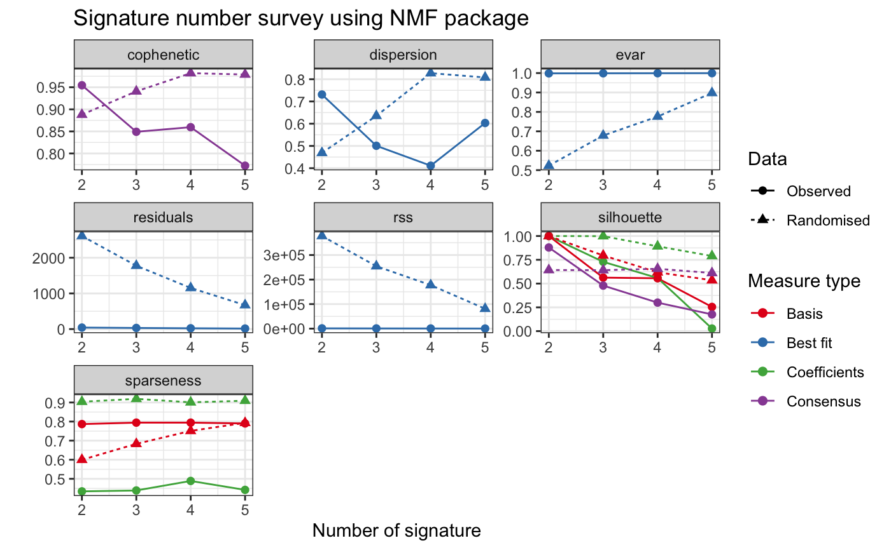

Use NMF package to evaluate the optimal number of signatures.
This is used along with sig_extract.
Users should library(NMF) firstly.
sig_estimate( nmf_matrix, range = 2:5, nrun = 10, keep_nmfObj = FALSE, what = "all", cores = 1, seed = 123456, use_random = TRUE, save_plots = FALSE, plot_basename = file.path(tempdir(), "nmf"), method = "brunet", pConstant = NULL, verbose = FALSE )
| nmf_matrix | a |
|---|---|
| range | a |
| nrun | a |
| keep_nmfObj | default is |
| what | a character vector whose elements partially match one of the following item, which correspond to the measures computed by summary on each multi-run NMF result: ‘all’, ‘cophenetic’, ‘rss’, ‘residuals’, ‘dispersion’, ‘evar’, ‘silhouette’ (and more specific .coef, .basis, .consensus), ‘sparseness’ (and more specific .coef, .basis). It specifies which measure must be plotted (what='all' plots all the measures). |
| cores | number of cpu cores to run NMF. |
| seed | specification of the starting point or seeding method, which will compute a starting point, usually using data from the target matrix in order to provide a good guess. |
| use_random | Should generate random data from input to test measurements. Default is |
| save_plots | if |
| plot_basename | when save plots, set custom basename for file path. |
| method | specification of the NMF algorithm. Use 'brunet' as default. Available methods for nmf decompositions are 'brunet', 'lee', 'ls-nmf', 'nsNMF', 'offset'. |
| pConstant | A small positive value (like 1e-9) to add to the matrix.
Use it ONLY if the functions throws
an |
| verbose | if |
a list contains information of NMF run and rank survey.
The most common approach is to choose the smallest rank for which cophenetic correlation coefficient starts decreasing (Used by this function). Another approach is to choose the rank for which the plot of the residual sum of squares (RSS) between the input matrix and its estimate shows an inflection point. More custom features please directly use NMF::nmfEstimateRank.
Gaujoux, Renaud, and Cathal Seoighe. "A flexible R package for nonnegative matrix factorization." BMC bioinformatics 11.1 (2010): 367.
sig_extract for extracting signatures using NMF package, sig_auto_extract for extracting signatures using automatic relevance determination technique.
# \donttest{ # Load copy number prepare object load(system.file("extdata", "toy_copynumber_prepare.RData", package = "sigminer", mustWork = TRUE )) library(NMF) cn_estimate <- sig_estimate(cn_prepare$nmf_matrix, cores = 1, nrun = 5, verbose = TRUE )#> Compute NMF rank= 2 ... + measures ... OK #> Compute NMF rank= 3 ... + measures ... OK #> Compute NMF rank= 4 ... + measures ... OK #> Compute NMF rank= 5 ... + measures ... OK#>#> method seed rng metric rank sparseness.basis sparseness.coef rss #> 2 brunet random 2 KL 2 0.7868164 0.4341062 1144.8714 #> 3 brunet random 1 KL 3 0.7944475 0.4388444 813.1814 #> 4 brunet random 2 KL 4 0.7944389 0.4887652 586.2708 #> 5 brunet random 2 KL 5 0.7901255 0.4419127 368.2307 #> evar silhouette.coef silhouette.basis residuals niter cpu cpu.all nrun #> 2 0.9985533 1.0000000 1.0000000 41.97589 570 0.051 2.900 5 #> 3 0.9989724 0.7286187 0.5627588 31.71708 630 0.057 2.931 5 #> 4 0.9992592 0.5586978 0.5559367 22.86119 1400 0.081 2.998 5 #> 5 0.9995347 0.0273156 0.2546472 15.37598 1380 0.061 2.961 5 #> cophenetic dispersion silhouette.consensus #> 2 0.9545457 0.7312 0.8794444 #> 3 0.8491389 0.5008 0.4788515 #> 4 0.8595682 0.4112 0.2998276 #> 5 0.7723529 0.6032 0.1758547#>#> Compute NMF rank= 2 ... + measures ... OK #> Compute NMF rank= 3 ... + measures ... OK #> Compute NMF rank= 4 ... + measures ... OK #> Compute NMF rank= 5 ... + measures ... OK#>#> method seed rng metric rank sparseness.basis sparseness.coef rss #> 2 brunet random 2 KL 2 0.5997533 0.9039689 377521.64 #> 3 brunet random 1 KL 3 0.6831360 0.9190830 254488.45 #> 4 brunet random 2 KL 4 0.7510472 0.9008415 177285.46 #> 5 brunet random 2 KL 5 0.7933783 0.9092956 81028.84 #> evar silhouette.coef silhouette.basis residuals niter cpu cpu.all nrun #> 2 0.5229561 1.0000000 1.0000000 2608.7704 420 0.029 2.934 5 #> 3 0.6784233 0.9983423 0.7955868 1776.1591 420 0.043 3.060 5 #> 4 0.7759785 0.8916780 0.6182755 1152.7439 420 0.033 3.151 5 #> 5 0.8976103 0.7897915 0.5349317 672.1096 440 0.037 2.978 5 #> cophenetic dispersion silhouette.consensus #> 2 0.8879280 0.4688 0.6423333 #> 3 0.9407022 0.6352 0.6407686 #> 4 0.9818863 0.8272 0.6555556 #> 5 0.9788747 0.8080 0.6111111# }